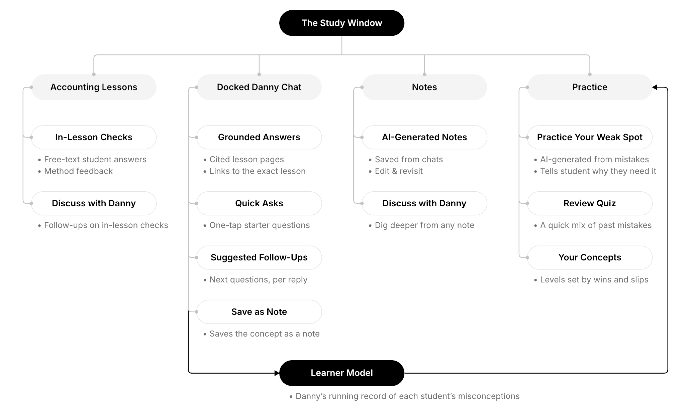

AI-Assisted Accounting Introduction Pedagogy Design
Yale School of Management

Overview
Yale's accounting pre-work course prepares 350+ incoming MBA and EMBA students each year before they begin their core coursework. The course was developed more than a decade ago, so its materials need to be updated to better reflect what MBA students actually need.
Our team redesigned the course content with an AI tutor. I led the research: user studies, literature review, and rounds of testing that fed each iteration and kept design decisions tied to what learners actually did rather than what we assumed.
Problem
This project was initiated to address two concerns. First, the professor sought to modernize the curriculum, shifting away from conventional bookkeeping instruction to focus instead on helping senior business leaders interpret financial statements for strategic decision-making.
Second, as AI capabilities rapidly advance, the project aimed to guide students in leveraging AI tools effectively throughout the course while actively minimizing AI misinterpretations and potential misuse.

User Study
The user study combined post-course survey analysis of 1,279 respondents and interviews with two past learners to define who we are designing for and what improvements the current course needs.
Who We Designed For
From Frustration to Fix
| Frustrations | Design Response |
|---|---|
| Both interviewees named the same problem: concepts that quietly stay broken. | Practice checkpoints run throughout the course, feeding a misconception model the AI tutor keeps for each student. |
| The top requested fix in the survey: explain why my answer was wrong. | The AI tutor reads the question context alongside the student's answer, then explains the gap in the same terms the module used. |
| Students pick up the terms without seeing how the statements connect. | Each concept arrives inside a scenario, showing where the number comes from and what decision it informs. |
Instructional Design
Real Statements
Presents CVS Health's two balance sheets, then traces how each explanatory statement accounts for one part of the change between them: cash, equities, and where net income comes from.
Nonprofit Statements
Moves to a nonprofit, Yale's own Statement of Financial Position, following what donor restrictions bind and what releases them, and how the Statement of Activities accounts for the change in Net Assets.
The new pre-work introduces accounting not as a set of definitions and rules to memorize, but as something built through a single business scenario: opening a bike repair shop. The target learning outcome is a transferable mental model of accounting as an information system that arises from the needs of a business, one that scales across different organizations and economic events.
To get there, we inverted the usual order. Instead of defining a concept and then applying it, each module opens with a situation the student has to reason about before they have the vocabulary for it. The shop carries across the first four modules, so each new concept attaches to a business the student already understands rather than a fresh abstract example.
Within Discovery, every module is built on the same three-stage model: Experience, then Discover, then Formalize. The sequence draws on research-based instructional design strategies, including problem-based learning, guided discovery, and scaffolding.
Experience
Entering the story without knowing the end.
The side gig has grown too tangled to track from memory.
Discover
Building the accounting logic step by step.
Students sort what belongs in the records into Things or Promises.
Formalize
Naming the emerging ideas in conventional accounting language.
The accounting entity arrives, with assets and liabilities.
AI Tutor Design
One reason this project began is a concern about the misuse of current AI chatbots. Students might get inaccurate answers, or bypass the learning process altogether by using AI to answer quiz questions. Beyond those concerns, the need for an effective AI tutor rests on what the course and its real learners require.
Most of the students are new to accounting, and our learner study shows that novices asked for more explanation of accounting terms and of the concepts behind them. However, the pre-work is asynchronous and runs online before the semester begins, so an instructor is not always on hand to answer questions quickly.
Research on accounting education also shows the potential of integrating an AI tutor into accounting learning: dialogic, Socratic conversation is what deep comprehension of accounting depends on, and passive learning should be mitigated in how accounting is taught today.
Tutor Features

Trigger Everywhere
Students can ask Danny a question at any point, anywhere in the course. Danny opens in a sidebar with quick-ask prompts to get them started.

Auto-Synced Context
Danny already knows which lesson the student is on and whether they answered the last question correctly, so nothing has to be explained twice.

Immediate Help With Errors
A wrong answer is marked with a button to get help on the spot. Danny’s explanation arrives as an add-on to the activity’s default feedback.

Need-Based Tutorial
Danny explains how the interface works when a student asks, one step at a time, and skips the parts the design already makes obvious.

Save to Notes
One click turns the conversation into a summary and files it in the student’s notes for later review.

Call Mode
Students can speak to Danny and follow the transcript at the same time, and can cut in mid-response the way a real conversation works.

Dashboard Design
To better understand how students perform, and to inform future iterations of the course, we designed an instructor dashboard.
- Student learning data. Records attempts, answers, and mistakes.
- Difficulty ranking. Ranks pages and questions by where students go wrong, so instructors can see which parts of the course are hardest.
- Anonymous information. Accounts are created from an email roster, and learning patterns are never tied to names.
- Danny usage at a glance. Engagement counts, the text-versus-voice split, common question themes, and a cohort summary linking questions to the mistakes behind them.
- Knowledge base management. Refresh Danny’s knowledge base in one click when content changes, and export everything to a spreadsheet.

Testing
We ran a controlled pilot with 31 participants in June 2026 to test the redesigned module and the AI tutor. Because of time constraints, the study covered only the first three tutorials of Module 1. Participants were mainly CMU students from different backgrounds and levels of prior accounting knowledge, chosen to represent the diverse backgrounds of MBA and EMBA students. Participants were randomly split into two groups: 15 used the AI tutor (Danny) and 16 did not. Both groups completed a pre-test, the tutorials, a post-test, and a feedback survey.
In that survey, the 15 who worked with the tutor rated the instructional content across five dimensions on a 1 to 5 scale.
The way this module is set up makes accounting seem less scary. It’s kind of like storytelling. Not the usual way to study accounting, but it was really easy to follow along and kept me engaged. Pilot participant, learner with prior business background
Impact
Where the original course was built more than a decade ago for a narrower audience, the redesigned pre-work frames accounting the way today's MBA and EMBA students will actually use it: as decision-makers who interpret financial information rather than produce it. The work goes to the Dean of the Yale School of Management and to CMU's Tepper School of Business, with the course due to launch for Yale students next year and to inform how accounting courses are developed at Tepper.
For learners
Instead of passive videos explaining numbers and equations, the pre-work introduces every concept through a tangible, story-driven scenario. Learners from any background can follow the reasoning and reach core ideas like the accounting identity as a conclusion rather than a formula to memorize.
For teaching
Because every activity and tutor conversation is captured in a shared database, instructors can see how students actually move through the material: where they hesitate, what they get wrong, and which concepts they bring to the tutor. Rather than a one-off deliverable, they get a working model they can develop further, with learning data to iterate against.
Reflection
What I learned
Collaborating across a team of different roles.
Research, design, and development each read the same finding differently, so a result that looked settled to me still had to be restated in the terms the next person worked in. Communicating a decision turned out to be as much of the job as reaching one.
Using testing results to argue for a design.
It is easy to defend a choice with how we assume people will use something. The pilot gave firmer ground: the survey named the fix learners asked for most, and the learner study showed which explanations novices actually wanted. Pointing at that evidence settled disagreements faster than intuition did.
What I would improve
Involve learners more directly in the design process.
Most of the design conversation happened between the professors and our development team. We did substantial research with current students early on, but that research informed the design from the outside rather than having students help shape it. Bringing them into the design process itself, not only as research subjects, is something we would do more of next time.
Test for longer, with real usage over time.
Because of the time available for testing sessions, our pilot covered only the first three tutorials of Module 1. Given a longer timeframe we would test across a wider stretch of the course and iterate on how students actually use it, rather than relying on a single session.